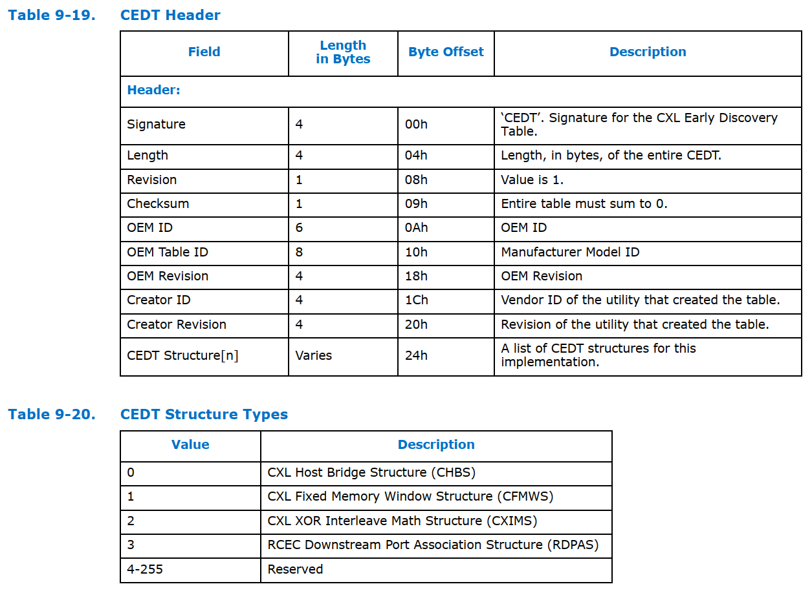

CEDT
[toc]
CEDT 是 ACPI 中的一个表格，它代表 CXL Early Discovery Table（CXL 早期发现表）。
CEDT 表是为了支持 CXL 设备和架构而引入的，它提供了系统中 CXL 设备和相关资源的信息。
CEDT 表的作用
CEDT 表的主要作用是在系统启动时，为操作系统和固件提供与 CXL 相关的信息，以便正确配置和初始化 CXL 设备。这些信息包括但不限于 CXL 设备的位置、配置和特性。
CEDT 表的内容
CEDT 表的具体内容可能因系统和 CXL 设备的配置而异，但通常包含以下几种条目（Entries）：
- CXL Host Bridge Structure：描述了 CXL 主桥的信息，包括其内存地址范围和其他相关配置。
- CXL Device Structure：描述了各个 CXL 设备的信息，如设备 ID、设备类型、内存配置等。
- CXL Switch Structure：如果系统中有 CXL 交换机（Switch），该结构提供了交换机的配置信息。
这些结构和信息允许操作系统在引导过程中识别、初始化和配置 CXL 设备，以充分利用 CXL 技术提供的高性能互连能力。
CEDT结构


#define INTERLEAVE_TARGETS 1
#pragma pack (1)
typedef struct {
EFI_ACPI_CEDT_CFMWS_STRUCTURE Cfmws;
UINT32 InterleaveTarget[INTERLEAVE_TARGETS];
} EFI_ACPI_CEDT_CFMWS_AND_INTERLEAVE_TARGET_STRUCTURE;
typedef struct {
EFI_ACPI_DESCRIPTION_HEADER Header;
EFI_ACPI_CEDT_CFMWS_AND_INTERLEAVE_TARGET_STRUCTURE CfmwsTarget;
EFI_ACPI_CEDT_CHBS_STRUCTURE Chbs;
} EFI_ACPI_CEDT_STRUCTURE_TABLE;
#pragma pack ()
STATIC EFI_ACPI_CEDT_STRUCTURE_TABLE Cedt = {
ARM_ACPI_HEADER (
EFI_ACPI_6_4_CEDT_SIGNATURE,
EFI_ACPI_CEDT_STRUCTURE_TABLE,
1
),
{
{
// CFMWS
{
1,
EFI_ACPI_RESERVED_BYTE,
sizeof (EFI_ACPI_CEDT_CFMWS_AND_INTERLEAVE_TARGET_STRUCTURE)
},
EFI_ACPI_RESERVED_DWORD,
0x3fe00000000,
0x200000000,
0,
0,
EFI_ACPI_RESERVED_WORD,
4,
2,
0
},
{
//Interleave target list
1
}
},
{
// CHBS
{
0,
EFI_ACPI_RESERVED_BYTE,
sizeof (EFI_ACPI_CEDT_CHBS_STRUCTURE)
},
1,
1,
EFI_ACPI_RESERVED_DWORD,
0x10D0000000,
0x1000
}
};
//
// Reference the table being generated to prevent the optimizer from removing
// the data structure from the executable
//
VOID* CONST ReferenceAcpiTable = &Cedt;
参考：
CXL Type-3 device discovery, configuration in firmware and prepare ACPI tables for kernel usage
CXL Spec3.0 Chapter 9.17